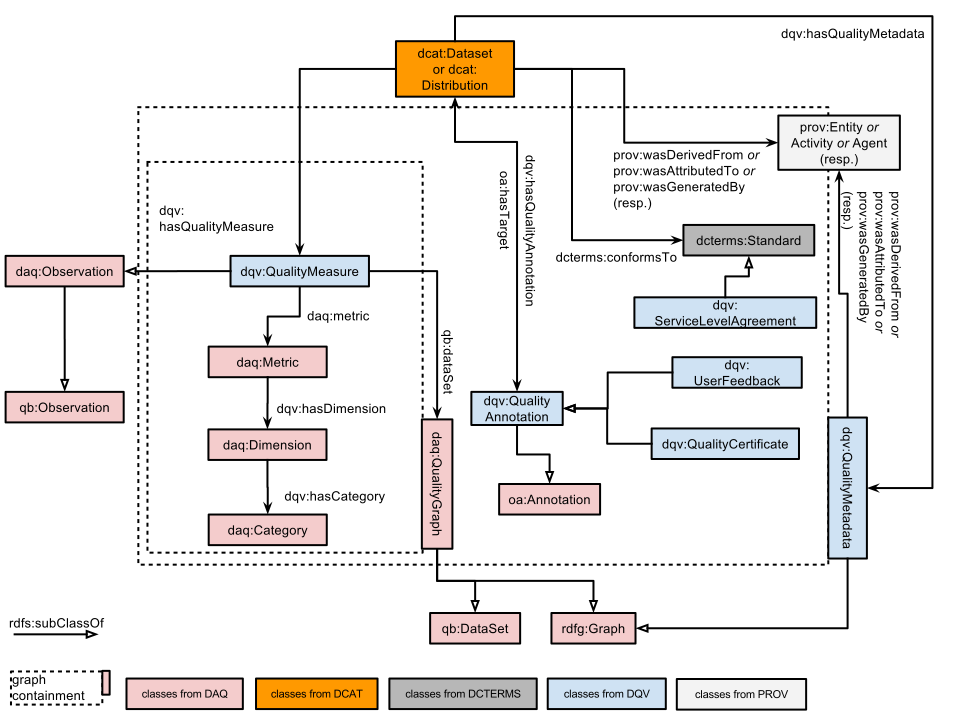

This document provides a framework in which the quality of a dataset can be described, whether by the
dataset publisher or by a broader community of users. It does not provide a formal, complete definition of quality,
rather, it sets out a consistent means by which information can be provided such that a potential user of a dataset
can make his/her own judgement about its fitness for purpose.
Status of This Document
This section describes the status of this document at the time of its publication. Other documents may supersede this document. A list of current W3C publications and the latest revision of this technical report can be found in the W3C technical reports index at http://www.w3.org/TR/.
This is an early draft of the DQV. Its publication is designed to provoke
comment on the overall direction foreseen as much as the specific details.
Publication as a First Public Working Draft does not imply endorsement by the W3C
Membership. This is a draft document and may be updated, replaced or obsoleted by other
documents at any time. It is inappropriate to cite this document as other than work in
progress.
This document was produced by a group operating under the
5 February 2004 W3C Patent
Policy.
The group does not expect this document to become a W3C Recommendation.
W3C maintains a public list of any patent
disclosures
made in connection with the deliverables of the group; that page also includes
instructions for disclosing a patent. An individual who has actual knowledge of a patent
which the individual believes contains
Essential
Claim(s) must disclose the information in accordance with
section
6 of the W3C Patent Policy.
This vocabulary does not seek to determine what "quality" means. We believe that
quality lies in the eye of the beholder; that there is no objective, ideal definition of it.
Some datasets will be judged as low-quality resources by some data consumers, while they will perfectly fit others' needs.
Accordingly, we attach a lot of importance to allowing many actors to assess the quality
of datasets and publish their annotations, certificates and opinions about a dataset.
A dataset's publisher should publish metadata that helps data consumers determine whether they can use the dataset to their benefit.
However, publishers should not be the only ones to have a say on the quality of data published
in an open environment like the Web. Certification agencies, data aggregators and data consumers can
make relevant quality assessments too.
We want to stimulate this by making it easier to publish, exchange and consume quality
metadata, for every step of a dataset's lifecycle.
This is why next to rather expected constructs, like quality measures, the Data Quality Vocabulary
puts a lot of emphasis on feedback, annotation, agreements and the provenance of the metadata.
2. Conformance
As well as sections marked as non-normative, all authoring guidelines, diagrams, examples,
and notes in this specification are non-normative. Everything else in this specification is
normative.
3. Namespaces
The namespace for DQV is provisionally set as http://www.w3.org/ns/dqv#.
DQV, however, seeks to re-use elements from other vocabularies, following the best practices for data vocabularies identified by the Data on the Web Best Practices Working Group.
The table below indicates the full list of namespaces and prefixes used in this document.
Prefix
Namespace
daq
http://purl.org/eis/vocab/daq#
dcat
http://www.w3.org/ns/dcat#
dcterms
http://purl.org/dc/terms/
dqv
http://www.w3.org/ns/dqv#
duv
http://www.w3.org/ns/duv#
oa
http://www.w3.org/ns/oa#
prov
http://www.w3.org/ns/prov#
Issue 2
Are we actually allowed by W3C to re-use elements from DAQ?
This vocabulary is not a community standard and its guarantee of sustainability may be judged not good enough.
A possible way forward would be to declare all relevant classes in the DQV namespace but then declare them all as owl:equivalentClass/property with their DAQ counterparts.
(Issue-180).
4. Vocabulary Overview
The following vocabulary is based on DCAT [vocab-dcat] that
it extends with a number of additional properties and classes
suitable for expressing the quality of a dataset.
The quality of a given dataset or distribution is assessed via a
number of observed properties. For instance, one may consider a
dataset to be of high quality because it complies with a specific
standard while for other use cases the quality of the data will
depend on its level of interlinking with other datasets. To express
these properties an instance of a dcat:Dataset
or dcat:Distribution
can be related to four different classes:
dqv:QualityAnnotation represents feedback and quality certificates given
about the dataset or a distribution of it.
dcterms:Standard
represents a standard the dataset or its distribution conforms to.
prov:Entity
represents an entity involved in the provenance of the
dataset or distribution.
dqv:QualityMeasure
represents a metric value providing quantitative or
qualitative information about the dataset or distribution.
Fig. 1Data model showing the main relevant classes and their relations. N.B. "graph containment" refers to the inclusion of quality statements in (RDF) graphs, e.g.
for capturing the provenance of quality statements (see later example).
Issue 3
What is the relation between duv:Feedback and dqv:UserFeedback? (Issue-165).
Issue 4
Should we have only the existing class daq:QualityGraph
or keep the new class dqv:QualityMetadata
to represent a set of statements providing quantitative and/or
qualitative information about the dataset or distribution. One could be a sub-class of the other. (Issue-181)
Issue 5
The label of daq:QualityGraph does not fit well with the current model.
DAQ graphs are meant to contain measures.
In our context a "quality graph" has a wider scope: actually the role of representing overall quality graphs is currently played by dqv:QualityMetadata. (Issue-182)
A Quality Dimension is a characteristic of a dataset relevant to the consumer (e.g., the availability of a dataset).
A Quality Metric is a procedure for measuring a data quality dimension, which is abstract, by observing a concrete quality indicator. There are usually multiple metrics per dimension; e.g., availability can be indicated by the accessibility of a SPARQL endpoint, or of an RDF dump. The value of a metric can be numeric (e.g., for the metric “human-readable labelling of classes, properties and entities”, the percentage of entities having an rdfs:label or rdfs:comment) or boolean (e.g. whether or not a SPARQL endpoint is accessible).
For example, a dimension could be "multilinguality" and two metrics could be "ratio of
literals with language tags" and "number of different language tags".
The following property should be used on this class:
daq:metric. The following property may be used for this class:
qb:dataSet.
The smallest unit of measuring a quality dimension is a metric. A metric belongs to exactly one dimension.
Issue 10
Do we want to keep the same occurrence constraints as defined in DAQ (for example, that every metric should belong to exactly one dimension)?
In this specific case this may be demanding too much on quality data publishers:
it could be that a metric does not clearly belong to a dimension, or that a metric is in scope for several dimensions. (Issue-187)
This section shows some examples to illustrate the application of the Dataset Quality Vocabulary.
Note
This section is still work in progress. Further examples will be provided as soon as some of the pending issues are resolved.
NB: in the remainder of this section, the prefix ":" refers to http://example.org/
6.1 Express a quality assessment with quality metrics
Let us consider a dataset myDataset, and its distribution myDatasetDistribution,
:myDataset
a dcat:Dataset ;
dct:title "My dataset" ;
dcat:distribution :myDatasetDistribution
.
:myDatasetDistribution
a dcat:Distribution ;
dcat:downloadURL <http://www.example.org/files/mydataset.csv> ;
dct:title "CSV distribution of dataset" ;
dcat:mediaType "text/csv" ;
dcat:byteSize "87120"^^xsd:decimal
.
An automated quality checker has provided a quality assessment with two (CSV) quality measures for myDatasetDistribution.
:myDatasetDistribution
dqv:hasQualityMeasure :measure1, :measure2
.
:measure1
a dqv:QualityMeasure ;
# when daq:computedOn ranges into a dcat:Distribution/dcat:Dataset,
# dqv:hasQualityMeasure is likely to be the inverse of daq:computedOn ?
# In any case we could remove this statement.
daq:computedOn :myDatasetDistribution ;
daq:metric :cvsAvailabilityMetric ;
daq:value "1.0"^^xsd:double
.
:measure2
a dqv:QualityMeasure ;
# when daq:computedOn ranges into a dcat:Distribution/dcat:Dataset,
# dqv:hasQualityMeasure is likely to be the inverse of daq:computedOn ?
# In any case we could remove this statement.
daq:computedOn :myDatasetDistribution ;
daq:metric :csvConsistencyMetric ;
daq:value "0.5"^^xsd:double
.
:cvsAvailabilityMetric
a daq:Metric ;
dqv:hasDimension :availabity
.
:csvConsistencyMetric
a daq:Metric ;
dqv:hasDimension :consistency
.
:availabity
a daq:Dimension ;
dqv:hasCategory :category1;
.
:consistency
a daq:Dimension ;
dqv:hasCategory :category2
.
# Categories and dimensions might be more extensively defined, for example,
# by grounding them in the section 'Dimensions and metrics hints'.
# However, any quality framework is free to define its own dimensions and categories.
6.2 Document the provenance of the quality metadata
The result of metrics obtained in the previous assessment are stored in the myQualityMetadata graph.
# myQualityMatadata is a graph
# we are assuming dqv:QualityMetadata is an extension of daq:QualityGraph,
# otherwise we should probably define a proper qb:DataStructureDefinition
:myQualityMetadata {
:myDatasetDistribution
dqv:hasQualityMeasure :measure1, :measure2
.
# The graph contains the rest of the statements presented in the previous example.
}
# myQualityMetadata has been created by: qualityChecker and it is the result of the :qualityChecking activity
:myQualityMetadata
a dqv:QualityMetadata ;
prov:wasAttributedTo :qualityChecker ;
prov:generatedAtTime "2015-05-27T02:52:02Z"^^xsd:dateTime ;
prov:wasGeneratedBy :qualityChecking
.
# qualityChecker is a service computing some quality metrics
:qualityChecker
a prov:SoftwareAgent ;
rdfs:label "a quality assessment service"^^xsd:string
# We should probably suggest to add more info about the services
.
# the qualityChecking is the activity that has generated myQualityMetadata starting from MyDatasetDistribution
:qualityChecking
a prov:Activity;
rdfs:label "the checking of myDatasetDistribution's quality"^^xsd:string;
prov:wasAssociatedWith :qualityChecker;
prov:used :myDatasetDistribution;
prov:generated :myQualityMetadata;
prov:endedAtTime "2015-05-27T02:52:02Z"^^xsd:dateTime
prov:startedAtTime "2015-05-27T00:52:02Z"^^xsd:dateTime;
.
6.3 Document the provenance of a dataset
Statements similar to the ones applied to the resource myQualityMetadata above can be applied to the resource myDataset to indicate the provenance of the dataset. I.e., a dataset can be generated by a specific software agent, be generated at a certain time, etc. The HCLS Community Profile for describing datasets provide further examples.
6.4 Express that a dataset received an ODI certificate
6.5 Express the quality of a linkset
Issue 11
This section will be completed by examples coming from Riccardo's work on measuring the quality of linksets between SKOS concept schemes, from the perspective of adding multilingual labels to these schemes. On the web, linksets are an especially interesting case of datasets! we could also add examples from qSKOS. (Issue-188)
7. Dimensions and metrics hints
This section is non-normative.
Note
This section will be refined, especially considering public feedback.
This section gathers relevant quality dimensions and ideas for corresponding metrics, which might be eventually represented as instances
of daq:Dimension and daq:Metric. The goal is not to define a normative list of dimensions and metrics,
rather, the section provides a set of examples starting from use cases included in the
Use Cases & Requirements document
and from the following sources:
The following table gives example on statistics that can be computed on a dataset and interpreted as quality indicators by the data consumer. Some of them can be relevant for the dimensions listed in the rest of this section. The properties come from the VoID extension created for the Aether tool.
Number of distinct external resources used (including schema terms)
http://ldf.fi/void-ext#distinctIRIReferences
Number of distinct literals
http://ldf.fi/void-ext#distinctLiterals
Number of languages used
http://ldf.fi/void-ext#languages
Issue 12
Are statistics about a dataset a kind of quality info we need to include in the data quality vocabulary? (Issue-164)
Issue 13
The Aether VoID extension represents statistics as direct statements
that have a dataset as subject and an integer as object. This pattern, which can be expected to be rather common, is different from
the pattern that DQV inherits from DAQ (see examples).
This document will probably have to explain how the different patterns can be reconciled, if indeed both should exist alongside. (Issue-189)
7.2 Availability
Can the data be accessed now and over time?
Yes/no, maybe with explanation why the data is not available
(privacy, security, archived, lost, not yet captured etc.)
Open/restricted/registration, again possibly with
explanation
For access/re-use
Indication of persistence and longevity
Since a dcat:Dataset is an abstract thing, it might be
available at any point in time, past present or future. We already
have dcterms:issued so two properties come to mind:
dcat:verifiedAvailableOn {date} (the last time
someone/something checked that the dataset was accessible, probably
applies to a dcat:Distribution, not dcat:Dataset)
dcat:availableUntilAtLeast {date} (Potentially a data on
which the dataset is expected to be withdrawn)
Other questions that come to mind: how do we indicate that the
dataset is expected to be available 'for the foreseeable future?'
7.3 Processability
Is the data machine readable ?
Level on the 5-star scale (although there were opinions that
it is dangerous to attach value to the linking because the data
might be good but link to ‘bad’ data)
Links to metadata standards used and data model/schema to
enable automatic processing
7.4 Accuracy
is the data correctly representing the real-world entity or event?
7.5 Consistency
Is the data not containing contradictions?
Can I use it readily in an analysis tool? Can I open the dataset in R and do some statistical manipulations? Can I open it in Tableau and make a visualization without doing a lot of cleaning?
There could be some overlap with accurracy.
7.6 Relevance
Does the dataset include an appropriate amount of data?
It might be useful to include some information about the
context (e.g., why was the data created and what purpose is it
supposed to serve).
7.7 Completeness
Does the data include all data items representing the entity or event ?
7.8 Conformance
Is the data following accepted standards ?
7.9 Credibility
Is the data based on trustworthy sources ?
This is described using the provenance vocabulary PROV-O
7.10 Timeliness
Is the data representing the actual situation and it is published soon enough ?
R-DataMissingIncomplete: 'Publishers should indicate if data
is partially missing or if the dataset is incomplete'
R-QualityComparable: 'Data should be comparable with other
datasets'
R-Data should be complete: 'Data should be complete'
R-QualityMetrics: 'Data should be associated with a set of
documented, objective and, if available, standardized quality
metrics. This set of quality metrics may include user-defined or
domain-specific metrics.'
R-QualityOpinions: 'Subjective quality opinions on the data
should be supported'
R-GranularityLevels: 'Data available at different levels of
granularity should be accessible and modelled in a common way'
We have to confirm whether the scope of DQV work is indeed these
"official" DQV reqs or if we should go beyond, e.g., reflecting the
quality of the vocabulary (re-)used, access to datasets, metadata
and more generally the implementation of our best practices (cf. the
"5
stars" thread).
The distinction between intrinsinc
and extrinsic metadata may help making choices here. For example,
DQV could be defined wrt. intrinsic properties of the datasets, not
extrinsinc properties (let alone properties of the metadata for a
dataset!) (Issue-190)
Issue 15
Backward compatibility with DAQ and Data Cube: DAQ exploits Data Cube to make metric results consumable by visualisers such as CubeViz (see Jeremy's paper). This may be useful to preserve in DQV. (Issue-191)